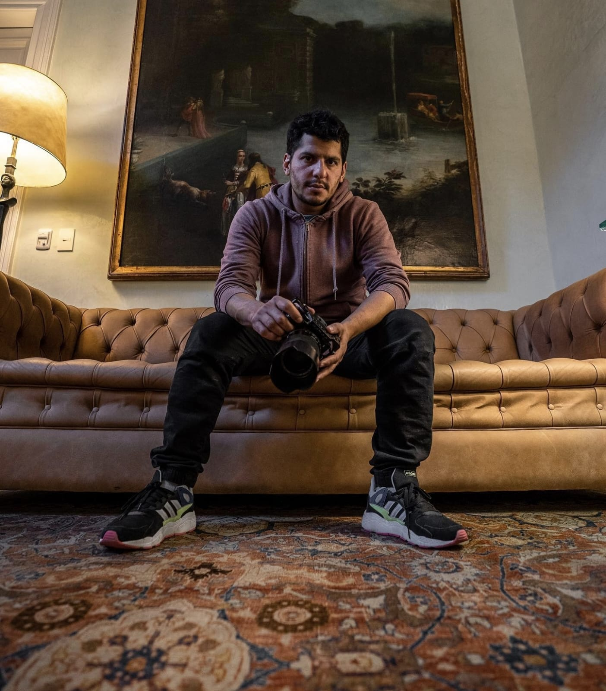
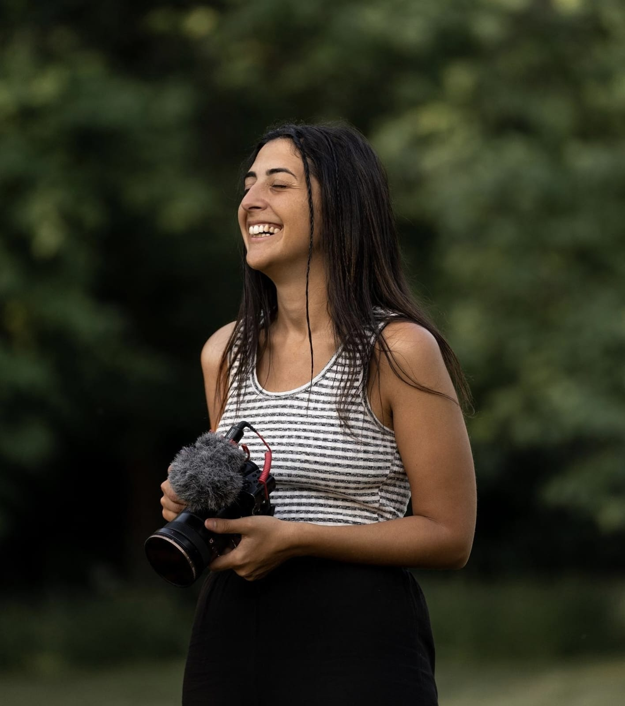
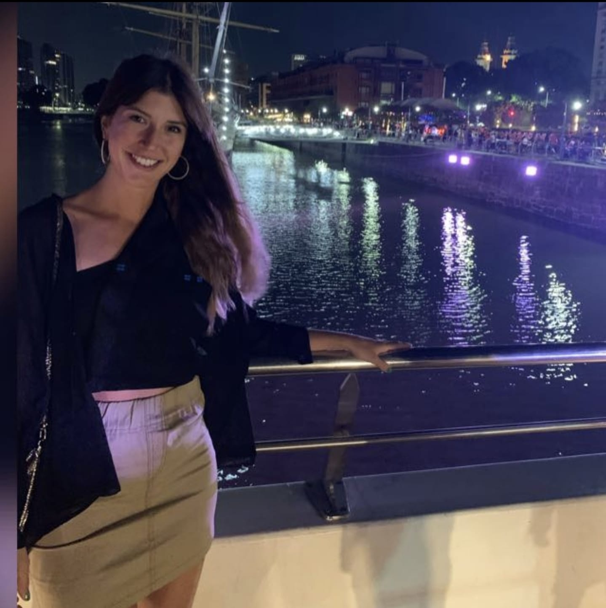

JMA Producciones
¿Quienes somos?
En JMA buscamos lograr que nuestros clientes tengan soluciones rapidas, practicas y faciles para resolver sus necesidades. Nuestra flexibilidad es lo mas importante, nos interesa que nos contactes, nos cuentes tu necesidad y asi poder diseñar un plan de accion para resolverla de la mejor forma posible. Contamos con un equipo de profesionales que manejan distintos tipos de skills, desde fotografia y video, hasta diseño y post-produción. En JMA nos interesa las relaciones a largo plazo, nuestro lema es "GANEMOS TODOS".
Estas en buenas manos
Nuestro equipo de profesionales esta compuesto por:
Juan Martin Arauz: Director de la productora. Juan Martin es un amante de los
viajes y de la naturaleza. Comenzo su camino en la produccion audiovisual cuando se compro su
primer
drone.
Paso de ser un simple aficionado, a un experto certificado en pilotear drones.
Hoy cuenta con 3 dispositivos diferentes, su mas preciado tesoro el DJI MAVIC 3, el DJI MINI PRO
3,
y su DJI MINI SE.
Juan, comenzo sus estudios en el mundo del periodismo deportivo y lentamente fue migrando al
mundo
de la produccion, donde se especializo como camarografo, fotografo y editor.
Sofia Grenier: La segunda al mando en JMA, Sofi es una profesional de la
fotogtrafia y el cine, en ella destaca su sentido estetico y morfologico, su liderazgo en el
manejo
de grandes equipos y su pasión por el arte audiovisual.
Tambien maneja las contrataciones de la productora y junto con Juan se encargan de la produccion
y
el acabado final de las piezas.
Ayelen Petrillo: Aye es una profesional del diseño grafico, UX, Redes Sociales.
Es
el alma estetica de la productora, todo lo que hacemos pasa por el ojo de ella, es la que define
colores y formas en nuestros trabajos.
Ayelen se formo como Licenciada en Publicidad y Diseñadora Grafica, trabajo en importantes start
up
y empresas, donde logro crecer en el ambito profesional.
Juan Martin Arauz: Drone y Video

Sofia Grenier: Fotografia y Produccion

Ayelen Petrillo: Diseño, UX y Redes
